De l'innovation pour avancer au quotidien
L'application est dans un objectif associatif où les services ne seront pas monnayé par la notion d'argent, à l'inverse de ses concurrents.


Une application web par le troc de services et de besoins.
Le client a fait émerger l'idée de réaliser un dispositif permettant d'échanger les tâches où l'on est inefficace contre des tâches où l'on est performant.
L'application est dans un objectif associatif où les services ne seront pas monnayé par la notion d'argent, à l'inverse de ses concurrents.
Pourquoi passer par une application web ?
Aujourd'hui le concept est géré sur tableur, ce qui deviendra ingérable par le futur.
L'application web permettra une relation fluide et autonome entre particuliers.


Juliette Saint-Jalme et Lise Poirier.
Au travers du scrum et du pomodoro.
Des technologies à jour pour une application optimal.


Réalisé par moi-même en HTML, CSS et TWIG

La navigation se fait par la barre de navigation mais également par le footer.
L'accueil se compose d'un header en parralaxe, d'un introduction, des 6 dernières annonces et d'une présentation du gérant de l'association.
Composé d'un parralaxe, du logo et d'une accroche.
Introduction au concept de la "Bouée Corsaire".

Une présentation du gérant de l'association.
L'inscription se fait à travers une modal.
La connexion se fait également par la modal.
Basé sur le même principe, les deux se composent d'une barre de recherche et des annonces.
Un formulaire de recherche et une navigation.
Chaque service ou besoin est représenté par une annonce. Un appel par le twig est réalisé à la base de données.
MVC, UML, BPM
● Le twig fait des appels controllers ----> ex : {{ service.title }}
● Le controller fait un appel à la base de données pour vérification.
● La base de données renvois les informations liées à un model
● Renvoyé lui-même au controller
Modélisation de la base de données.
● Si user ajoute service / besoin
● Alors vérification des champs obligatoires du formulaire d'ajout
● Vérification et approbation dans la base de données
● Service / besoin ajouté
● Si user rentre ses identifiants
● Vérification et approbation dans la base de données
● Si Ok, user connecté
● Service / besoin ajouté
Le prochain sprint : l'interface utilisateur